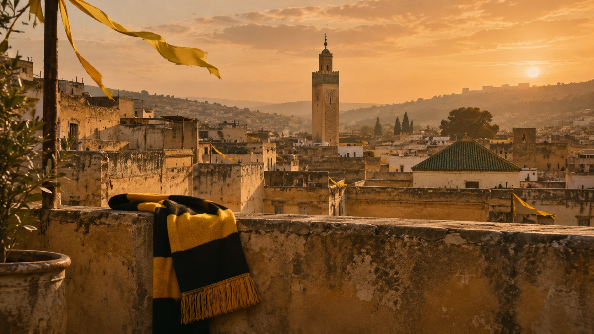

LA VILLE.
Une inspiration : Fès. Ses lignes, ses matières, sa lumière. Le point de départ de cette expérience.
03 / L’UNIVERS DIMA MAS
Le football comme héritage. Le MAS comme point de rencontre.

01 / L’APPARTENANCE
Fondé en 1946 à Fès, le Maghreb Association Sportive porte une histoire qui dépasse le terrain. Un souvenir partagé, une voix dans la foule, des couleurs que l’on reconnaît de loin.
SOURCE : GUIDE CAF DE FÈS ↗02 / LES REPÈRES
CLIQUE SUR UNE ÉPOQUE POUR L’EXPLORER03 / UNE ÉTOILE DANS L’HISTOIRE
Le MAS remporte la Coupe de la Confédération de la CAF en 2011. Un repère majeur de son histoire, célébré ici par une sculpture numérique originale.
CONSULTER LE PALMARÈS · FFF ↗04 / CE QUI NOUS RELIE
Une inspiration : Fès. Ses lignes, ses matières, sa lumière. Le point de départ de cette expérience.
Du jaune pour l’énergie. Du noir pour le caractère. Un langage visuel que l’on porte ensemble.
Chaque génération invente sa façon d’aimer le club. La nôtre passe aussi par le design et le numérique.
DIMA MAS / LA SUITE T’APPARTIENT